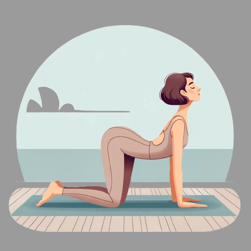
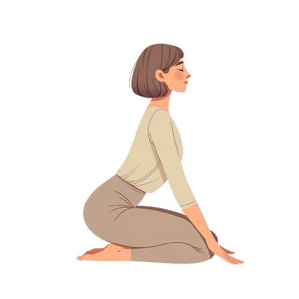
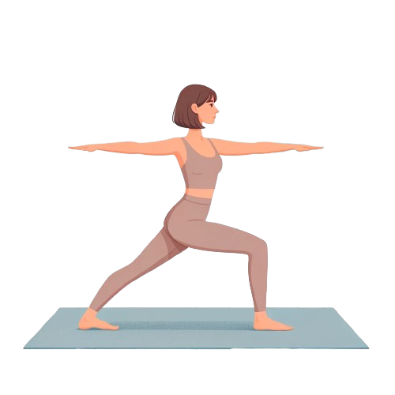

Pelvic Tilts: Start on your hands and knees. Inhale and arch your back, exhale and round your back. Repeat slowly for a minute.
Seated Butterfly Stretch: Sit with your back straight and bring the soles of your feet together. Hold your feet and gently press your knees towards the floor.
Side-Lying Leg Lifts: Lie on your side and lift the top leg slowly, then lower it back down. Repeat on both sides.
Gentle Neck Stretches: Slowly tilt your head to one side, bringing your ear towards your shoulder. Hold for a few seconds, then switch sides.
Cat-Cow: Start on your hands and knees. Inhale, arch your back, and lift your head (Cow). Exhale, round your back, and tuck your chin to your chest (Cat).
 Warrior II: Stand with feet wide apart. Turn one foot out, bend the knee, and extend the arms parallel to the floor.
Child's Pose: Kneel on the floor, sit back on your heels, and stretch your arms forward.